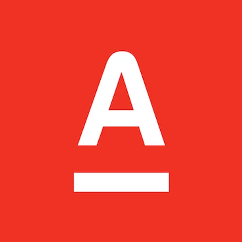
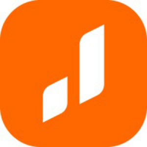

Покупка и перенос номера в приложении Tele2
Спроектировал покупку и перенос номера в приложении без барьеров на входе: время оформления сократилось с 8 до 2 минут.
Подробнее
Вёл редизайн мобильного банка для бизнеса в Альфа-Банке и увеличил продажи номеров в Tele2 на 420%. Разработал дизайн-системы для Tele2, X5 Digital и Jusan Bank. Сам провожу CustDev и юзабилити-тесты

Альфа-Банк
Jusan Bank
Спроектировал покупку и перенос номера в приложении без барьеров на входе: время оформления сократилось с 8 до 2 минут.
Подробнее

Собрали одну библиотеку компонентов на дизайн-токенах, которая переключает интерфейс с одного бренда на другой в один клик — в дизайне и в коде.
Подробнее

Вместе с командой выяснил, почему предприниматели не справляются с базовыми задачами в приложении, и переделал ключевые сценарии и навигацию под их реальное поведение.
Подробнее